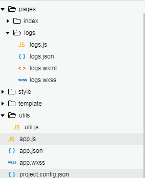

微信小程序开发概述
由于微信的使用人数众多，因此微信小程序也受到许多企业公司的推崇。除此之外小程序还有开发简单容易，用户流量较大的优点，因此学习小程序还是很有意义的。
开发入门
浏览器环境的前端html、css、js分别对应于微信中的wxml、wxss、js文件。与浏览器环境不同的是每个页面(Page)和整个应用(App)都有对应名称的json文件用于配置，project.config.json文件用于开发环境的配置。

WXML
wxml(WeiXin Markup Language)是框架设计的一套标签语言，结合基础组件、事件系统，可以构建出页面的结构。
数据绑定
wxml页面数据绑定使用双括号的形式1
<view data-ml="{{a}}"> {{a + b}} + {{c}} + d </view>
数据是单向绑定的，只有通过setData方法改变Page的data对象中的属性才能改变页面中对应表达式中的值
条件渲染与列表渲染
条件渲染与列表渲染相当于，vue中的组件
条件渲染1
2
3<view wx:if="{{length > 5}}"> 1 </view>
<view wx:elif="{{length > 2}}"> 2 </view>
<view wx:else> 3 </view>
wx:if是惰性的，如果在初始渲染条件为 false，框架什么也不做，在条件第一次变成真的时候才开始局部渲染。
相比之下，hidden 就简单的多，组件始终会被渲染，只是简单的控制显示与隐藏。
列表渲染1
2
3<view wx:for="{{array}}" wx:for-index="idx" wx:for-item="itemName" wx:key="message">
{{idx}}: {{itemName.message}}
</view>
如果列表中项目的位置会动态改变或者有新的项目添加到列表中，并且希望列表中的项目保持自己的特征和状态（如 <input/> 中的输入内容，<switch/>的选中状态），需要使用 wx:key 来指定列表中项目的唯一的标识符。
wx:key的两种值：字符串代表item中的某个熟悉;*this代表循环中的item本身
template
template定义的模板可以在任意地方引用1
2
3
4
5
6
7
8
9
10
11
12<!-- template.wxml -->
<template name="odd">
<view> odd </view>
</template>
<template name="even">
<view> even </view>
</template>
<!-- index.wxml -->
<block wx:for="{{[1, 2, 3, 4, 5]}}">
<template is="{{item % 2 == 0 ? 'even' : 'odd'}}"/>
</block>
include可以将目标文件除了<template/>的整个代码引入，相当于是拷贝到include位置1
2
3
4<!-- index.wxml -->
<include src="header.wxml"/>
<!-- header.wxml -->
<view> header </view>
import可以在该文件中使用目标文件定义的template1
2<import src="item.wxml"/>
<template is="item" data="{{text: 'forbar'}}"/>
相比于include使用import可以设置数据
import具有作用域的概念，C导入B，B导入A。C中只能获取B中的模板，而不能获取B中导入的A中的。
WXSS
wxss是小程序用于描述页面的样式语言，该语言与css基本相同。
新增加了rpx(responsive pixel)响应式单位，该单位可以根据屏幕宽度进行自适应。
样式导入@import “common.wxss”;
模块化
导出模块可以使用CommonJS机制和ES6的模块机制
CommonJS
每个js模块都在自己的作用域中，导出模块需要使用exports或module.exports
导入使用require,但是不支持绝对路径。
ES6
使用ES6的模块机制导出模块，导入使用import…from等关键字，导出使用export default关键字
路由分类
路由是指导航到页面的方式，路由的种类有：navigateTo、redirectTo、switchTab、reLaunch、navigateBack
除了navigateTo、switchTab的方式是隐藏当前页面其他的方式都会卸载当前页面。
navigateTo, redirectTo 只能打开非 tabBar 页面。
switchTab 只能打开 tabBar 页面。
reLaunch 可以打开任意页面。
具体见表路由
事件分类
小程序中事件分为冒泡和非冒泡两种类型。
事件的生命周期阶段与浏览器中相同都是先捕获后冒泡。
绑定事件的方式1
2
3
4
5
6
7
8
9
10
11
12<view id="outer" bindtap="handleTap1">
outer view
<view id="middle" catchtap="handleTap2">
middle view
<view id="inner" bindtap="handleTap3">
inner view
</view>
<view id="inner" bind:touchstart="handleTap3" capture-bind:touchstart="handleTap4">
inner view
</view>
</view>
</view>
- bind事件发生在冒泡阶段，且不阻止事件向上冒泡
- capture-bind事件发生在捕获阶段，且不阻止事件捕获
- catch事件发生在冒泡阶段，阻止事件向上冒泡
- capture-catch事件发生在捕获阶段，阻止事件捕获
组件
小程序提供了许多组件，常见的有：
- view相当于div
- text相当于span
- navigator相当于a
- image相当于img
- canvas相当于canvas
- contact-button客户会话，从此处发送的消息，会在微信小程序后台接收到
小程序中表单form组件不同于浏览器的地方是，无法像浏览器一样通过给表单配置action让页面直接跳转。需要对表单设置submit事件，在submit中获取数据处理跳转逻辑，要获取数据表单项必须要有name属性，这点与浏览器中一致。
小程序中的button除了像浏览器中一样可以通过form-type属性设置为submit、reset与表单相关的按钮之外。
还可以通过设置open-type属性设置为特别的按钮:
- contact(打开客服会话)
- share(触发用户转发)
- getUserInfo(获取用户信息，可以在bindgetuserinfo回调中取到用户信息)
- getPhoneNumber(获取用户手机号，可以从bindgetphonenumber中取得)
一些细节
小程序中阻止事件冒泡，使用的是catchXX方法(事件还分为冒泡和非冒泡两种)
没有阻止默认行为的方法
使用wx.canvasToTempFilePath方法生成图片，如果canvas使用图片进行了绘制，那图片必须是本地图片。而且在微信基础库版本1.5.4下，使用本地图片需要导出两次才能在开发者工具上的canvas看到图片
1 | wx.downloadFile({ |